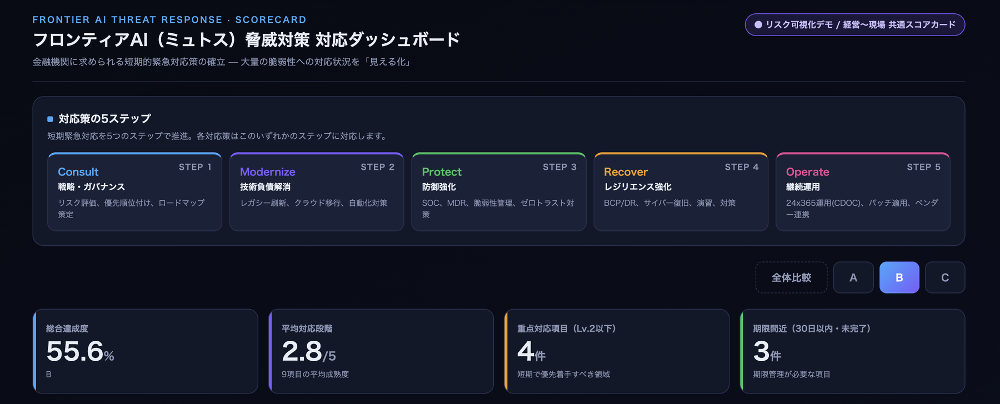
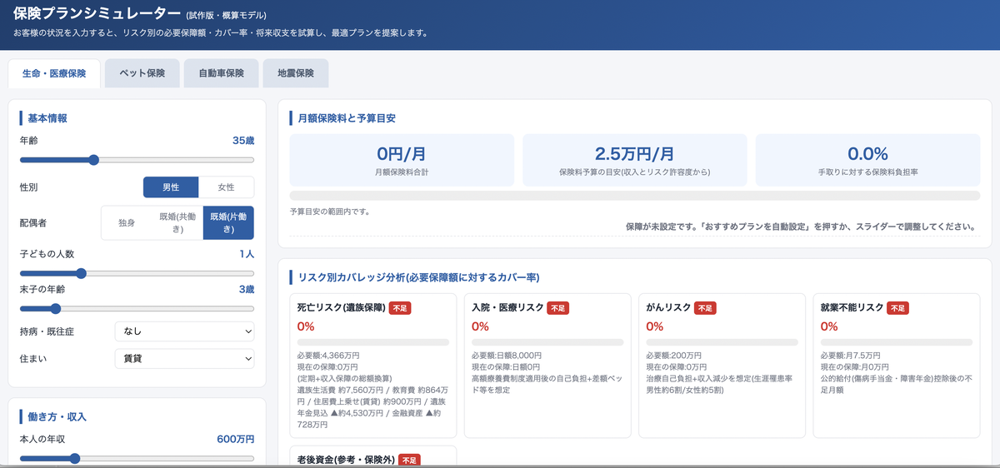
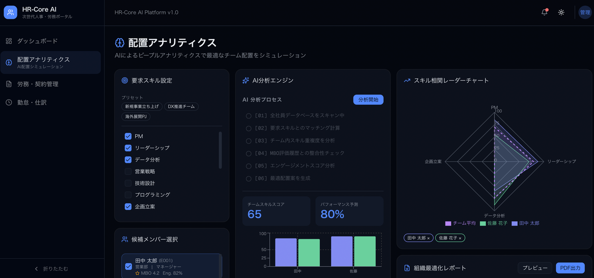
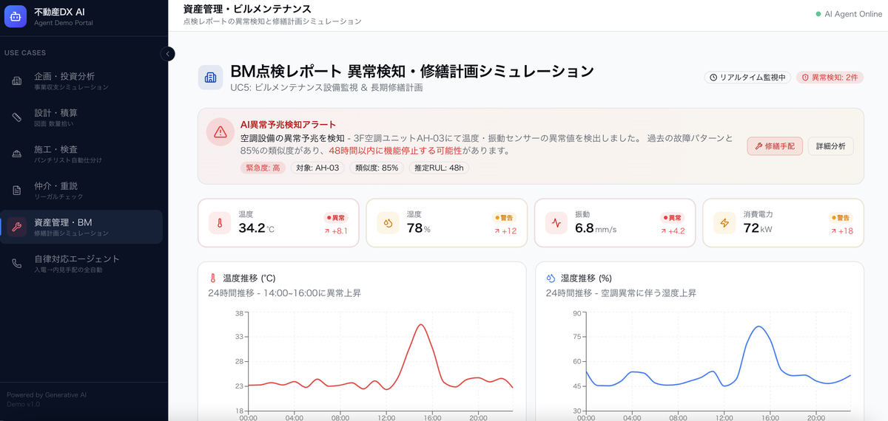
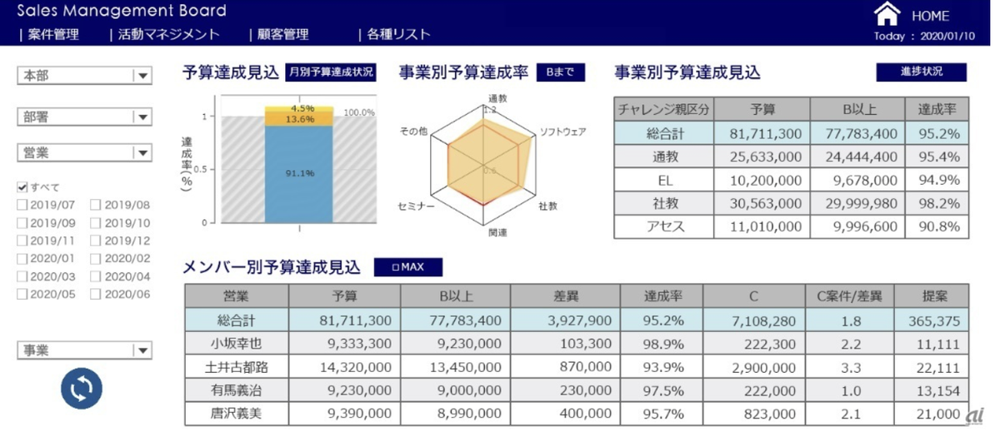
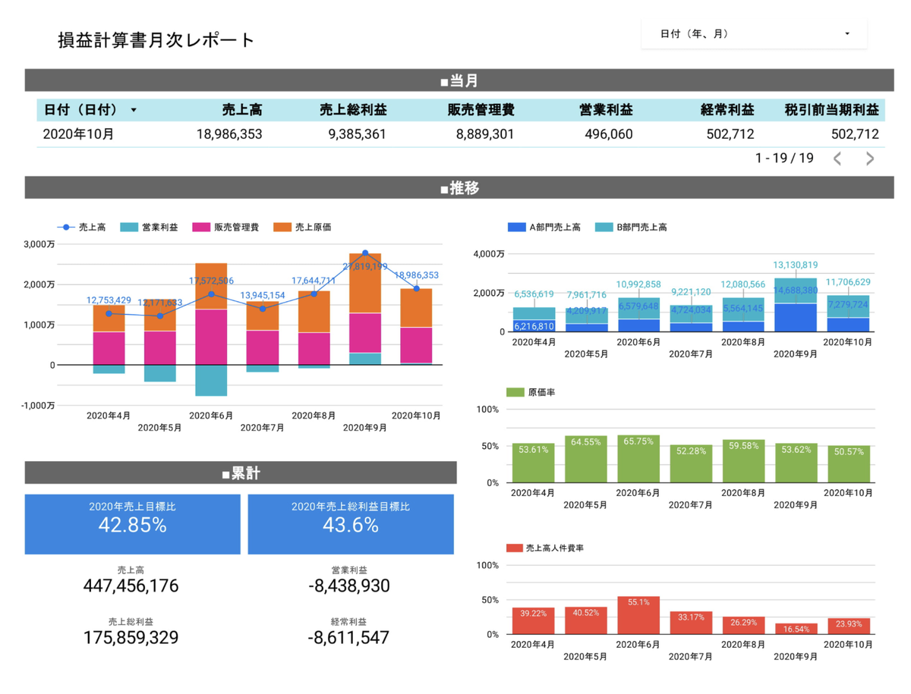

私たちが Claude Code をはじめとするフロンティアAI（Anthropic Claude / OpenAI Codex）を使って、実際に "数日〜数週間" で構築してきた業種別ソリューションのライブデモ集です。 各デモは独立した Web アプリとして稼働しており、ボタン1つでお試しいただけます。
※ いずれも試作・PoC 用途であり、実運用時は業界規制・データ要件に合わせて再設計いたします。

役員・事業部長・グループ長クラスが、自らの手で業務アプリを作る半日ハンズオン。¥100,000（税別）／5名まで。フロンティアAIで意思決定者の "AI解像度" を一気に上げる研修プログラム。
研修の詳細を見る →
家族構成・働き方・資産・リスク許容度から、死亡／医療／がん／就業不能の必要保障額とカバー率を分析。90歳までの資産推移を3シナリオで予測。生命／医療／ペット／自動車／地震保険までカバーした単一ファイルの静的Webツール。
Live demo →
採用・育成・配置をデータドリブンに最適化する人事ダッシュボード。Next.js + shadcn/uiで、エンゲージメント・リテンション・スキルマッピングを統合可視化。エクゼクティブが「次の打ち手」をその場で議論できるUI。
Live demo →
ポートフォリオ可視化と将来価値予測を一画面に集約。物件ごとのキャッシュフロー、エリア相場、リスクシナリオを横断比較。意思決定のスピードと精度を引き上げる管理者ダッシュボード。
Live demo →
車種・年式・走行距離・状態から予測価格を即時算出。回帰モデル＋業界相場で営業現場・査定担当者のクロージング率を支援する単一ファイルWebツール。
Live demo →先端AIに伴う情報セキュリティ・倫理リスクを可視化。経営層が説明可能な統制を保ちながらAI活用を加速するためのリスクモニタリング基盤。
公開準備中 →
ATMの障害・問い合わせ対応をAIエージェントが一次受付。会話ログから根本原因を分類・トレンド化し、現場負荷とSLA違反を削減するオペレーション基盤。
公開準備中 →Claude Code でモデルと協調しながら、UI／ロジック／テストをマルチエージェントで並行構築。仕様→検証→修正のループを数時間で1周し、デモ初稿を素早く作る。
"AIの予測" を出して終わりではなく、人間が判断・修正できる UI を最初から組み込む。営業・経営層が"その場で議論できる"画面設計を重視。
"動くもの" を最短で出して、KPI が動くかを早期検証。本番運用に進むかどうかを定量で判断できるよう、PoC 段階から計測指標を仕込む。